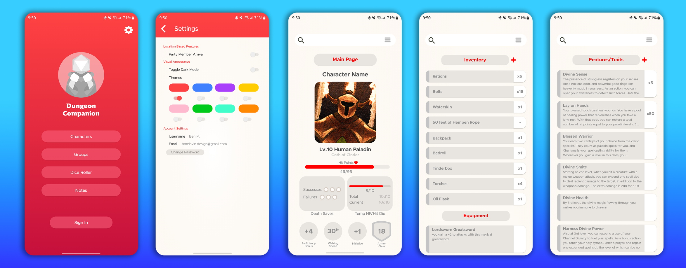
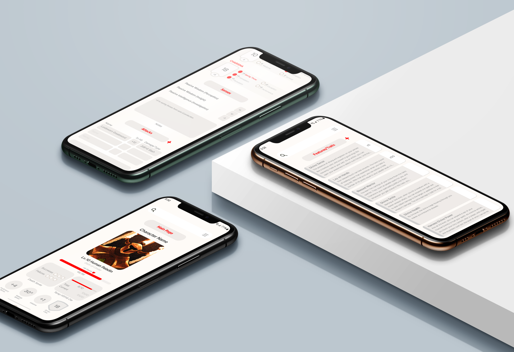

Dungeon Companion is a mock up of a mobile application dedicated to aiding players of tabletop roleplaying games. I noticed when going through the app store, specifically on Android devices, that a lot of the apps available were all function and little form. I felt that a good app should have a balance of looks and functionality, and so I took it upon myself to create a concept for an app. This was done for an Information Design class at the University of Massachusetts: Dartmouth, and was a project where I took a lot of liberties to explore different concepts I don't typically see in apps like this one. Instead of housing only players character sheets, it also allows for communication between players and game masters. And it can be a place for you to schedule and be reminded of upcoming sessions.

